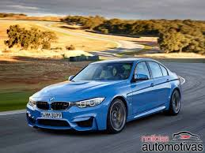
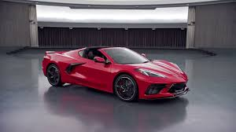
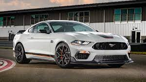
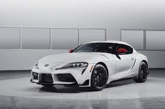
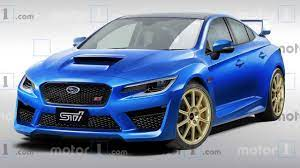

Imports Esportivos
| Foto | Descrição | Preço (R$) | Quantidade disponível |
|---|---|---|---|
|  | O BMW M3 Competition, combina as proporções robustas e distintas do seu design de três seções e 4 portas com o estilo esportivo típico de um veículo M. Com os seus impressionantes 510 cv de potência e um torque de 650 Nm. Equipado com um motor BMW M TwinPower Turbo de alto desempenho, transmissão de 8 velocidades M Steptronic com Drivelogic, diferencial M Sport e diversas tecnologias derivadas do automobilismo, a dinâmica máxima ao dirigir é garantida – quer em sua utilização no dia a dia, quer nas pistas de corridas. | R$ 795.950,00 | 5 |
|  | Depois de muita expectativa, a Chevrolet apresentou a 8ª geração do Corvette. O design é diferenciado, a carroceria agora tem a frente mais longa, uma característica que lembra os modelos europeus de alto desempenho. O novo modelo adota o novo motor V8 LT2 de 6.2 litros na posição central traseira, trabalhando em conjunto com uma transmissão automática de dupla embreagem de 8 marchas. | R$ 699.000,00 | 1 |
|  | Seu motor é o 5.0 V8 Coyote que entrega 483 cv e 56,7 kgfm, acoplado ao novo câmbio automático de 10 marchas. O cupê mede 4788 mm de comprimento, 1915 mm de largura, 1379 mm de altura e 2720 mm de entre-eixos, com porta-malas de 382 litros de capacidade. Sua velocidade máxima é 250 km/h limitados eletronicamente, e seu 0-100 km/h é feito em 4,3 segundos. | R$ 545.000 | 8 |
|  | Em casa, na estrada ou pista, o motor de seis cilindros em linha de 3,0 litros do Toyota GR Supra tem todos os ingredientes para estimular os seus sentidos. Equipado com um único turboalimentador twin-scroll, injeção direta de combustível de alta precisão e controle de válvula variável, ele oferece 340 cv DIN e 500 Nm de torque para uma carga estimulante de 100 km / h em 4,3 segundos e uma velocidade máxima de 250 km / h. | R$ 300.000,00 | 2 |
|  | o WRX estreará em abril de 2021 e chegará ao mercado no mesmo ano. O WRX STI está previsto para estrear em junho de 2022. Ambos devem ter um motor boxer turbo a gasolina de 2,4 litros com cerca de 400 cv e 50 kgfm de torque máximo sob o capô. | R$ 450.000,00 | 3 |